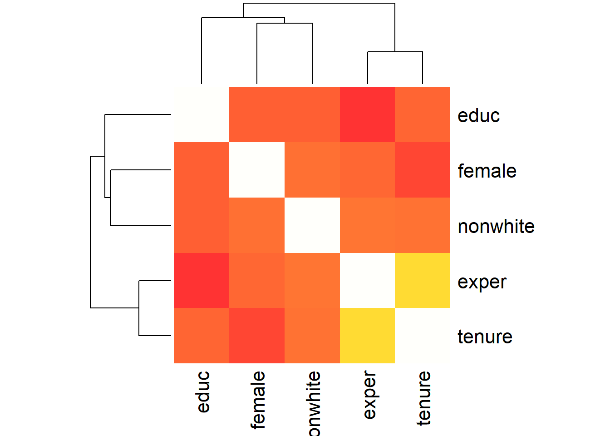

Correlation is a statistical relationship between bivariate data. It indicates the degree to which two variables are linearly related. Correlation ranges from +1 to -1. +1 indicates a perfect linear relationship, 0 indicates no relationship, and -1 indicates a perfect negative relationship.
In R, there are a number of packages and commands to compute correlation and display correlation matrices. In this short intro, we will cover only a few.
Using data set wage1 in package wooldridge and basic statistics comman cor, let’s produce a correlation table for variables \(educ, exper, tenure, nonwhite, female\).
data(wage1, package='wooldridge')
matrix1 = cor(wage1[,c(2,3,4,5,6)])
round(matrix1, 2)## educ exper tenure nonwhite female
## educ 1.00 -0.30 -0.06 -0.08 -0.09
## exper -0.30 1.00 0.50 0.01 -0.04
## tenure -0.06 0.50 1.00 0.01 -0.20
## nonwhite -0.08 0.01 0.01 1.00 -0.01
## female -0.09 -0.04 -0.20 -0.01 1.00Using package Hmisc and command rcorr, we can indicate if we want to use Pearson corrleation (used for continuous variables) or Spearman (used for ordinal variables). Before using any of these, you need to check the underlying assumptions of each. rcorr command also provides us with p-values that tell us the probability of finding the current result when actually there is no correlation between the two variables.
library(Hmisc)
CorMat1=rcorr(as.matrix(wage1[,c(2,3,4)]), type = c("pearson"))
CorMat2=rcorr(as.matrix(wage1[,c(5,6)]), type = c("spearman"))
CorMat1## educ exper tenure
## educ 1.00 -0.3 -0.06
## exper -0.30 1.0 0.50
## tenure -0.06 0.5 1.00
##
## n= 526
##
##
## P
## educ exper tenure
## educ 0.0000 0.1984
## exper 0.0000 0.0000
## tenure 0.1984 0.0000CorMat2## nonwhite female
## nonwhite 1.00 -0.01
## female -0.01 1.00
##
## n= 526
##
##
## P
## nonwhite female
## nonwhite 0.8027
## female 0.8027Very often, it is a good idea to show these results visually, especially, if you plan to publish your results in a report. Among many packages that can help you, there is corrplot. It allows a user to call a variety of visual figures to represent the correlation matrix. For examples of what kind of figures you can create using this package, see this link. Let’s try a few plots.
library(corrplot)
corrplot(CorMat1$r, method = "square")corrplot(matrix1, type = "upper", order = "hclust", tl.col = "black", tl.srt = 45)corrplot(CorMat1$r, type="upper", order="hclust",
p.mat = CorMat1$P, sig.level = 0.05, insig = "blank")Using PerformanceAnalytics package and command chart.Correlation, we can create a correlation chart which provides with scatter plots between the two variables, correlation coefficient and the histogram of the variable itself. Using command ‘heatmap’, we can create a heatmap of the correlation matrix as can be seen below.
library("PerformanceAnalytics")
chart.Correlation(wage1[,c(2,3,4,5,6)], histogram=TRUE, pch=19)heatmap(x = matrix1, col = heat.colors(100, alpha=0.8), symm = TRUE)